Unless noted otherwise, every result above uses unit stride (incx = incy = 1) — the normal case, and the coalesced, best-case GPU access pattern. Real usage sometimes passes a non-unit stride (e.g. operating on a row or column of a larger matrix, where incx = lda), which breaks memory coalescing and costs measurably more. This section sweeps a few representative strides to characterize that cost separately, collapsed below by default — expand a stride to see its table and chart.
alpha is a plain multiplier here: the kernel applies it unconditionally, with no branch for any particular value. A flat sweep is therefore the expected result and is recorded as a measured null. Levels include 0, 1 and a denormal-producing 1e-38 because those are the values a shader could special-case if it ever grew a branch — and strsm is the routine where one does.
Intel R Iris R Xe Graphics Tgl Gt2 — alpha = -3.75
n
compute ms
GB/s
1024
0.0655
0.1875
65536
0.1311
6.0000
1048576
1.3763
9.1429
16777216
10.5513
19.0807
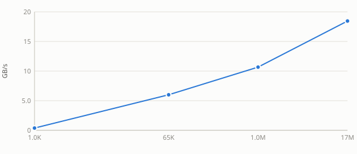
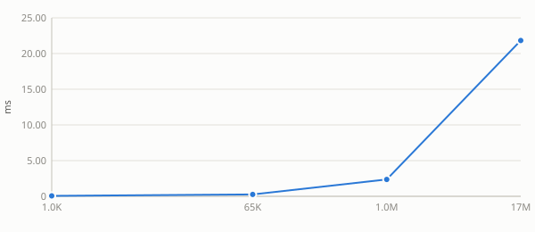
Intel R Iris R Xe Graphics Tgl Gt2 — alpha = 0
n
compute ms
GB/s
1024
0.0655
0.1875
65536
0.1311
6.0000
1048576
1.3763
9.1429
16777216
10.5513
19.0807
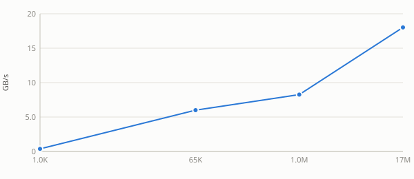
Intel R Iris R Xe Graphics Tgl Gt2 — alpha = 1e-38
Benchmark results for saxpy on Intel R Iris R Xe Graphics Tgl Gt2.
Intel R Iris R Xe Graphics Tgl Gt2
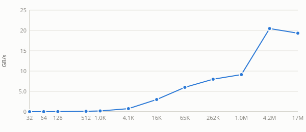
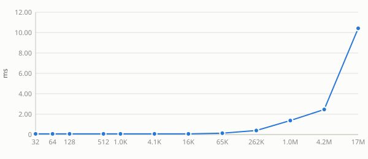
See also
Stride sweep
Unless noted otherwise, every result above uses unit stride (
incx = incy = 1) — the normal case, and the coalesced, best-case GPU access pattern. Real usage sometimes passes a non-unit stride (e.g. operating on a row or column of a larger matrix, whereincx = lda), which breaks memory coalescing and costs measurably more. This section sweeps a few representative strides to characterize that cost separately, collapsed below by default — expand a stride to see its table and chart.Intel R Iris R Xe Graphics Tgl Gt2 — stride = 4
Intel R Iris R Xe Graphics Tgl Gt2 — stride = 5
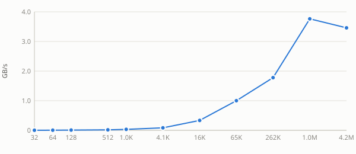
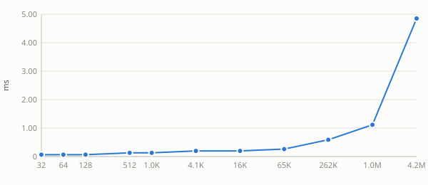
Intel R Iris R Xe Graphics Tgl Gt2 — stride = 32
Intel R Iris R Xe Graphics Tgl Gt2 — stride = 33
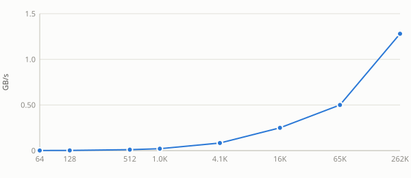
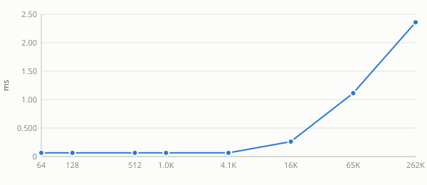
Intel R Iris R Xe Graphics Tgl Gt2 — stride = 255
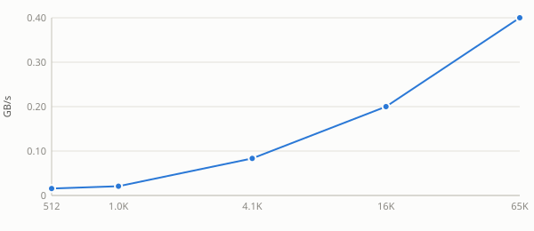
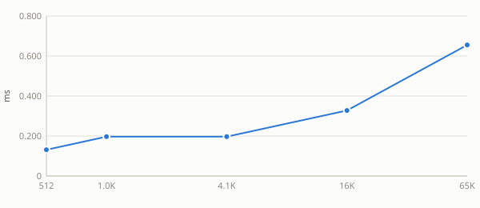
Intel R Iris R Xe Graphics Tgl Gt2 — stride = 256
See also:
alpha sweep
alphais a plain multiplier here: the kernel applies it unconditionally, with no branch for any particular value. A flat sweep is therefore the expected result and is recorded as a measured null. Levels include0,1and a denormal-producing1e-38because those are the values a shader could special-case if it ever grew a branch — andstrsmis the routine where one does.Intel R Iris R Xe Graphics Tgl Gt2 — alpha = -3.75


Intel R Iris R Xe Graphics Tgl Gt2 — alpha = 0

Intel R Iris R Xe Graphics Tgl Gt2 — alpha = 1e-38
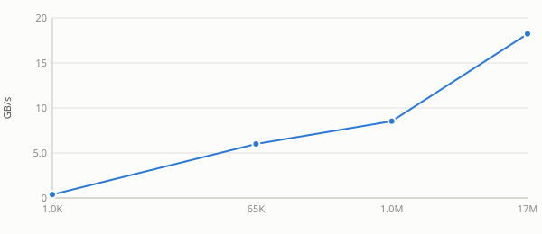
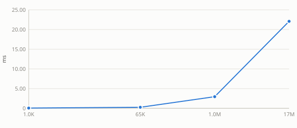
Intel R Iris R Xe Graphics Tgl Gt2 — alpha = 1
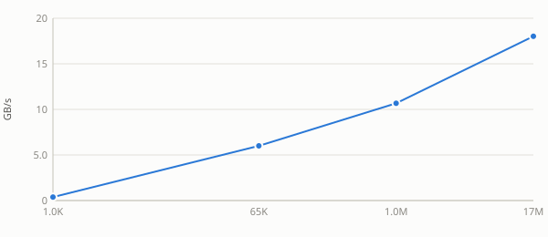
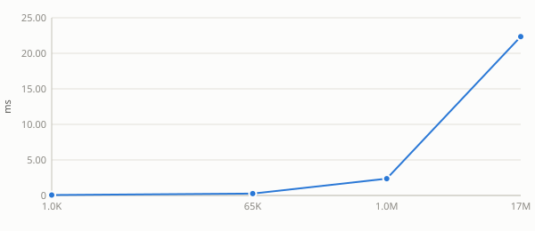
Intel R Iris R Xe Graphics Tgl Gt2 — alpha = 2.5
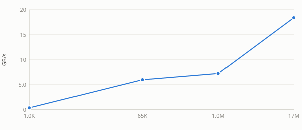
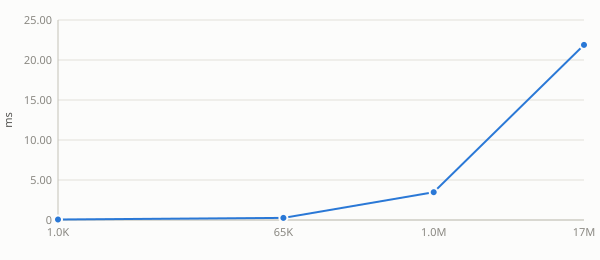
See also: